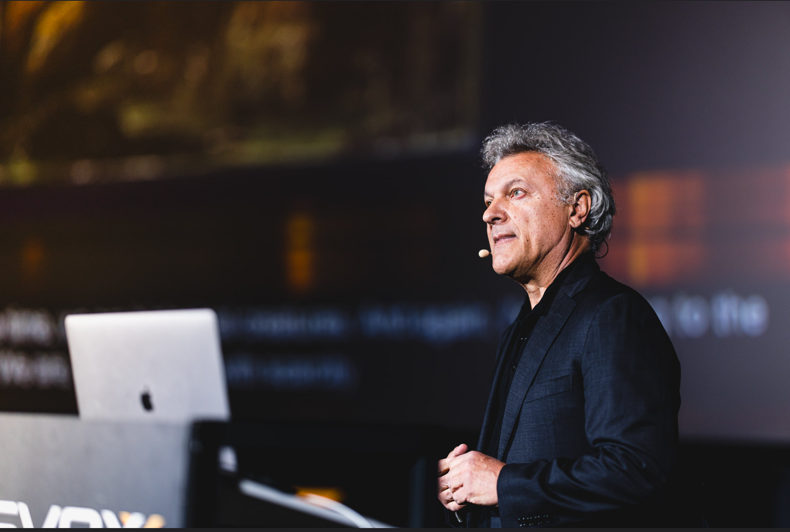

The Problem
AI can accelerate coding throughput, but it also amplifies architecture mistakes, test fragility, and operational risk. Many teams are shipping more while understanding less, which creates hidden drag and uncertainty for leadership.
What You Will Learn
- How to separate human navigation decisions from AI execution mechanics.
- Why Extreme Programming disciplines are becoming critical in AI-assisted delivery.
- How to turn tests into steering signals, not just safety checks.
- How to design team workflows that preserve quality at AI speed.
Who This Is For
- Senior engineers leading complex delivery in AI-accelerated environments.
- Engineering managers and directors responsible for delivery quality and predictability.
- CTOs and technical founders shaping operating models for scale.
Session Structure
- Live cohort sessions with practical walkthroughs and strategy framing.
- Case-based discussions focused on real engineering and leadership tradeoffs.
- Applied exercises to translate principles into your team context.
Instructor

Alex Bunardzic is a software engineering practitioner and advisor with three decades of experience helping organizations improve delivery reliability, technical direction, and execution discipline.
Limited Seats
This is not a recorded course. It is a live masterclass delivered to a private cohort with limited seats so every participant gets focused interaction and direct guidance.
Investment positioning: $2,000-$3,000 per seat for the live private-cohort format.